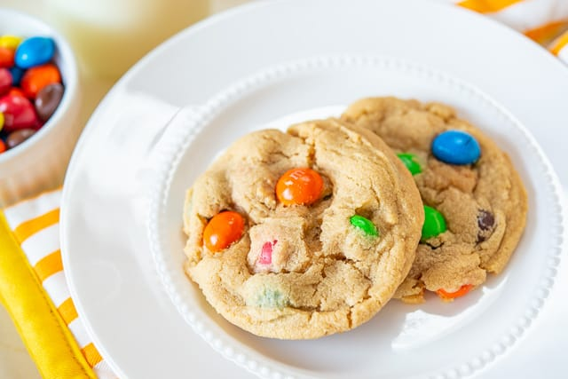
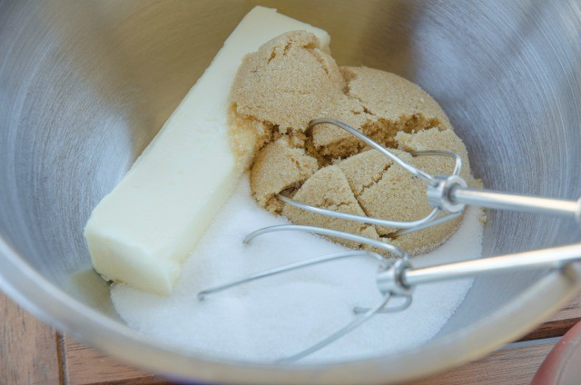
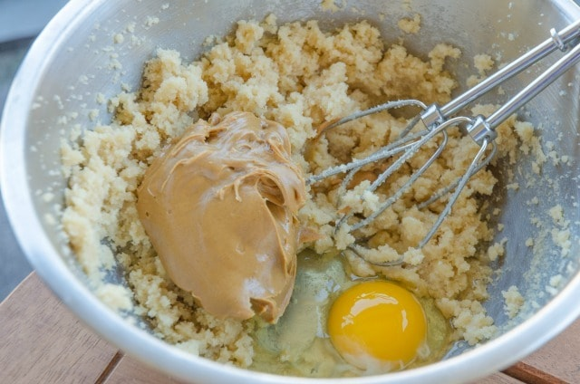
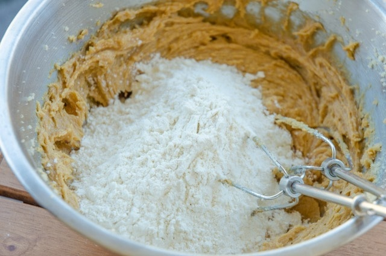
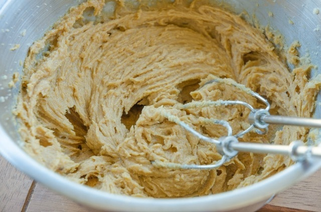
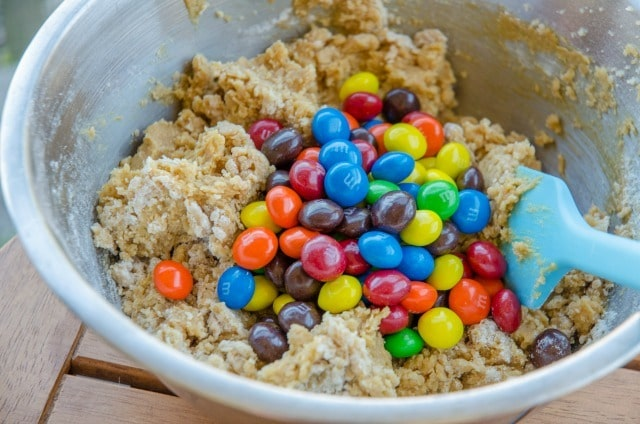
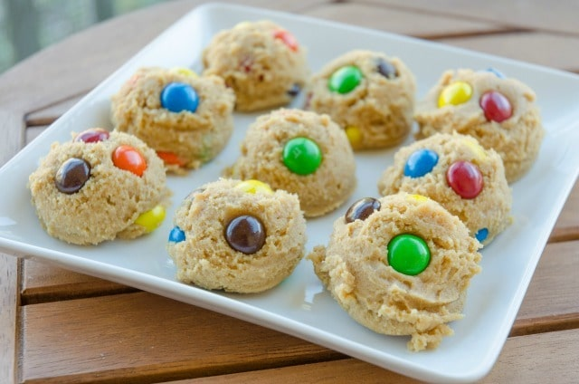

M&M cookies

"A cookie (American English), or a biscuit (British English), is a baked or cooked snack or dessert that is typically small, flat and sweet"
INGREDIENTS
- 1.25 cups all-purpose flour
- 3/4 tsp baking soda
- 1/2 tsp baking powder
- 1/4 tsp sea salt
- 1/2 cup unsalted butter softened
- 1/2 cup sugar
- 1/2 cup packed brown sugar
- 1/2 cup peanut butter
- 1 large egg
- 2 cups peanut butter M&Ms
INSTRUCTION
- Preheat the oven to 350 degrees F. Line a baking sheet with a silicone mat or parchment paper.
- In a medium bowl, whisk to combine the flour, baking soda, baking powder, and sea salt. Set aside.
- Place the butter, sugar, and brown sugar in a large bowl and cream them together with a hand mixer for approximately two minutes, until the mixture looks fluffy.
- Add the peanut butter and egg and mix until incorporated.
- Add the dry ingredients and mix until the flour has almost disappeared.
- Finally, add the peanut butter M&Ms and stir them in gently with a spatula.
- Using a large cookie scoop, portion out mounds of the cookie dough on your prepared baking sheet, leaving 2 inches between each cookie.
- Bake for 12-14 minutes, until the edges are slightly brown and the mounds have flattened a bit. Let the cookies cool, then enjoy!
INSTRUCTION-PICTURES






Back to menu